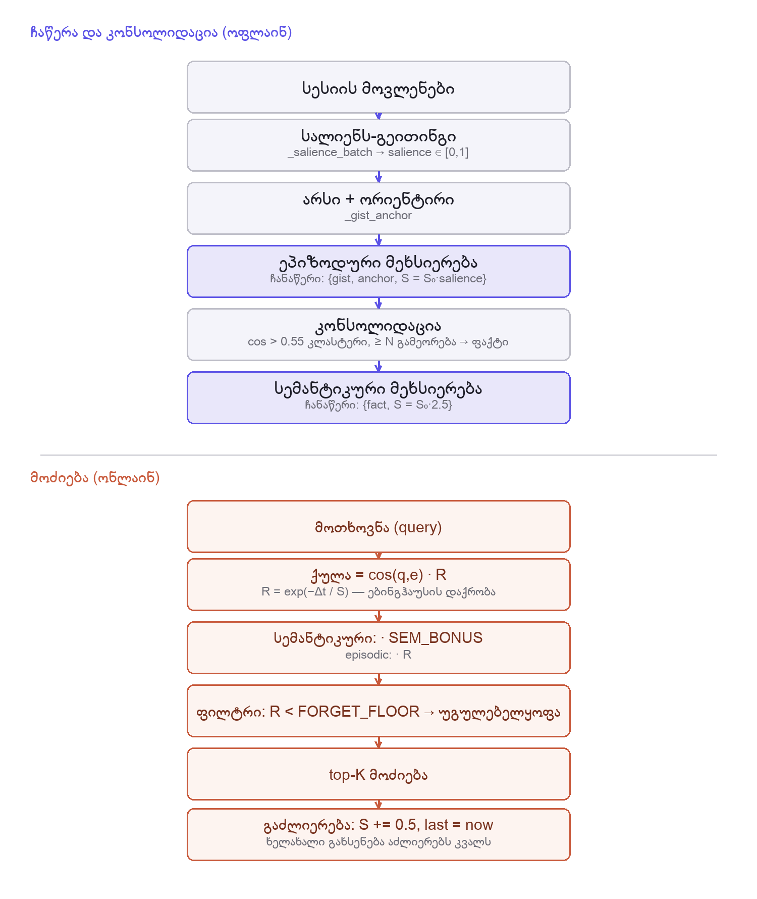
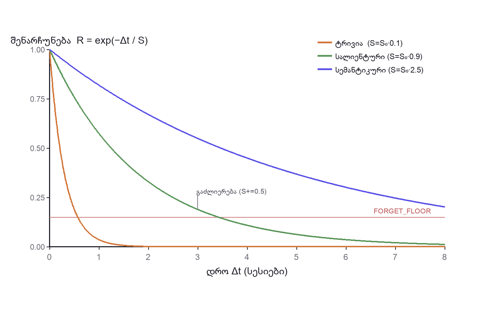

კოგნიტურ თეორიაზე დაფუძნებული მეხსიერების არქიტექტურა ხმოვანი AI თანამოსაუბრისთვის
ალექსანდრე იმნაიშვილი · ხელმძღვანელი: ოთარ თავდიშვილი
საქართველოს ტექნიკური უნივერსიტეტი · 2026
ერთჯერადი ხელსაწყო — რეაქტიული, უმეხსიერო.
უწყვეტი პარტნიორი — კონტექსტი, იდენტობა, ინიციატივა.
შეუძლია თუ არა ადამიანის მეხსიერების პრინციპებზე დაფუძნებულ არქიტექტურას AI აქციოს უფრო თანამოსაუბრედ აღქმულ სისტემად?
თითოეული ერთ თეორიას ახორციელებს, ფასდება სიზუსტეზე (HippoRAG, MemoryBank, ReadAgent…).
მეხსიერება აყალიბებს — და შეუძლია შეარყიოს — ურთიერთობა (Cox, Replika).
ვერ მოიძებნა კონტროლირებადი კვლევა, რომელიც სხვადასხვა თეორიაზე დაფუძნებულ არქიტექტურებს ადარებდეს აღქმულ სოციალურ კონსტრუქტებზე — მით უფრო ხმაში.
თითოეულს ვიხილავთ არა როგორც ისტორიას, არამედ იმ დაკვირვებადი ქცევის კუთხით, რომელსაც პროგნოზირებს.

sals = _salience_batch(events) S0 = DECAY_S_BASE * max(0.1, sal)
g, anchor = _gist_anchor(ev)
self.episodes.append({"gist": g, "anchor": anchor, …})poc/harness.py · MemC.end_session() — რეალური გაშვება: „ამინდი მზიანია“ sal=0.20 → S=0.4 · „მე მქვია ლექსო“ sal=0.90 → S=1.8
def _R(self, m, now):
dt = max(0, now - m["last"])
return math.exp(-dt / max(0.3, m["S"]))if cos(a["emb"], self.episodes[j]["emb"]) > 0.55: if len(cluster) >= CONSOLIDATE_N:
m["S"] += 0.5; m["last"] = now
poc/harness.py · _R / _consolidate / retrieve — რეალური გაშვება: ამინდის R: 1.000 → 0.082 → 0.001 ✗ · ფაქტი S=5.0
def _R(self, m, now):
dt = max(0, now - m["last"])
return math.exp(-dt / max(0.3, m["S"]))
def end_session(self, sid, events): pass · def retrieve(self, query, now): return [], 0.0append({"text": ev, …}) → cos(q, m["emb"])append({"gist": _gist(ev), …}) → cos(q, m["emb"])append({"gist": g, "anchor": anchor, "S": S0, …}) → cos(q, m["emb"]) · R (სემანტ. ×1.25)C vs B+ — ეს კონტრასტი განასხვავებს დინამიკას უბრალო კურაციისგან. (ოთხივე კლასი: poc/harness.py — განსხვავება მხოლოდ მეხსიერების ლოგიკაშია)
ამ ნაშრომში არცერთი მტკიცება არ ეყრდნობა ადამიანების მონაცემებს — ეს პატიოსნად არის დეკლარირებული.
რბილი დავიწყება დადასტურდა · ლატენტური პარიტეტი B/B+/C-სთვის · მოძიების სიზუსტე დახასიათებული.
პირობები განსხვავებულ ქცევას წარმოქმნიან — მექანიზმის სიგნალი, არა აღქმის მტკიცება.
ნაშრომი აწვდის აპარატურასა და მეთოდოლოგიას, რომ გავზომოთ — ხდის თუ არა ადამიანისებრი მეხსიერების დინამიკა AI-ს უფრო თანამოსაუბრედ აღქმულ სისტემად, კურაციისგან გამიჯნულად.
მზად ვარ თქვენი კითხვებისთვის.
ალექსანდრე იმნაიშვილი · სტუ · 2026